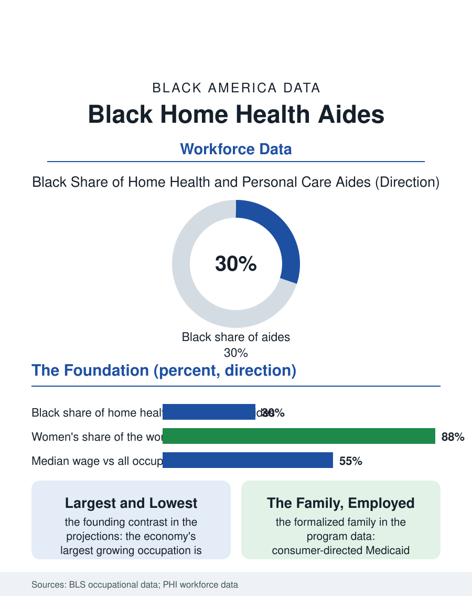

Black Employment
The Morning Arrival: Black Home Health Aides
Three million strong at the pay floor, the morning arrival the whole care system is promised on. The home health aide file.

Home health and personal care aides constitute the largest and fastest-growing workforce in the American economy's projections and its most Black at scale: roughly a quarter to a third of the three-million-plus aides are Black, overwhelmingly women, at median wages that place the nation's most necessary job near its pay floor. This article reads the home health aide file.
Three Million Strong, at the Floor
The Bureau's projections make the occupation the economy's growth champion in absolute numbers across every recent decade's forecast, driven by the aging file's arithmetic and the system's preference for the home over the facility, so that the workforce's size and its wage are the file's founding contrast: the median aide's wage in the current data runs in the mid-teens per hour, the benefits thin, the hours fragmented across the clients' schedules, the travel between the homes unpaid in the practice the wage litigation has only partly repaired. The composition is the care economy's summary: the workforce is near ninety percent women, its Black share in the vicinity of a third by the survey data's best counts, its immigrant share large and rising, the three populations' overlap making the aide the single most representative worker of the economy's care foundation. The agency file divides the workforce's terms, the agency-employed aide of the business file's firms against the consumer-directed aide of the Medicaid self-direction programs, in which the client, often the family itself, is the employer of record, a model whose growth has made the family member the paid aide in millions of households, the kinship care file's formalization at the wage's rate. The training file's brief is the occupation's unfinished standard: the federal floor of seventy-five hours for the Medicare agency's aide against the states' higher and the unions' proposed higher still, with the dementia and the behavioral competencies the caseload actually requires riding as the endorsements the better programs fund.
The Body and the Schedule
The occupational health file is the aide's own body: the lifting and the transfer of the adult patient in the unmodified home, without the facility's equipment or the second pair of hands, produce the injury rates the compensation data rank among the service economy's highest, borne by the worker least able to afford the injury's wage loss. The schedule's fragmentation is the file's second tax: the two-hour cases scattered across the city, the aide's day a bus route of other people's needs, her own hours summing below the full-time the benefits' thresholds require, a structure the agencies' economics impose and the workforce's organizing has made its central demand, the guaranteed hours and the travel pay of the leading contracts and the state standards. The pandemic wrote the file's public chapter, the aide as the essential worker whose essentialness the wage did not record, and the subsequent labor shortage in the occupation, the agencies' waitlists for want of aides, is the market's own commentary on the wage's adequacy, recorded in the unfilled cases of the aging file's most dependent.
The Foundation's Wage
The home health aide file closes on the wage's meaning, because this workforce is the economy's foundation in the strictest sense the labor files use the word: the elder's independence, the hospital's discharge, the daughter's employment, all rest on the aide's morning arrival, and the wage's level is therefore the society's own valuation of the independence it claims to prize, stated in the only terms that do not flatter it. The policy file's levers are the Medicaid rate's, the aide's wage being, as the child care file's was, a public budget in disguise, and the states that raised the rate floor with the pass-through requirements aimed at the paycheck itself are the file's current experiments, their vacancy data the results to watch. The bureau counts the aides in the millions and the openings in the hundreds of thousands a year. The file's last entry is the morning's first door, the aide's key in the elder's lock at the hour the whole system's promise comes due, kept, in the data's overwhelming majority, by a Black woman whose name the elder knows and whose wage the budget that funds her has set at the floor, which is the care economy's whole account in a single arrival.
More in Black Employment
The Black Unemployment Rate: The Two-to-One Pattern
Black unemployment runs at roughly twice the White rate — 5.5 percent against 3.3 percent in annual averages — a ratio stable across five decades of federal data. How it is measured and why it persists.
Black Median Weekly Earnings: The 80-Cent Ratio
Black full-time workers earn a median of about $900 a week — roughly 80 cents for every dollar White workers earn. The BLS earnings data by group, gender, and occupation.
Black Labor Force Participation: Working at National Rates
Black labor force participation runs at roughly the national rate — and Black women participate at higher rates than White women. The BLS participation data.
Source: Bureau of Labor Statistics occupational employment and projections; PHI National Direct Care Workforce data.